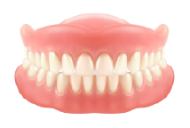

こんな症状がある方は、きらり歯科クリニックまでご相談ください
- 歯が抜けたままになっている
- 入れ歯をつくりたい
- 入れ歯がずれて痛い
- 入れ歯が安定しない
ENGAGEMENT
かみ合わせの大切さ、知っていますか？
FEATURES
当院の入れ歯・義歯治療の特徴
Feature1
丁寧なカウンセリング

Feature2
精密な検査
Feature3
かみ合わせを重視
DENTURE TYPE
入れ歯の種類
保険診療から自由診療まで、幅広い選択肢の中からお一人お一人にぴったりのものを提供いたします。
| 素材 | 特徴 | 費用 |
|---|---|---|
|
レジン床義歯

|
|
保険適用 |
|
金属床義歯
|
|
準備中 |
|
ノンクラスプ
デンチャー |
|
保険適用 |
BRIDGE TYPE
ブリッジの種類
ブリッジは、歯を失った場所の両隣りの歯を削って土台を作り、それを支えにして人工歯を装着する治療法です。
橋を架けることに似ているため、「ブリッジ」と呼ばれています。
入れ歯よりも安定感があるため、力を入れて噛むことができます。入れ歯は本物の歯の約1/3の力、
ブリッジは約2/3の力で噛むことができるといわれています。
橋を架けることに似ているため、「ブリッジ」と呼ばれています。
入れ歯よりも安定感があるため、力を入れて噛むことができます。入れ歯は本物の歯の約1/3の力、
ブリッジは約2/3の力で噛むことができるといわれています。
| 素材 | 特徴 | 費用 |
|---|---|---|
|
金銀パラジウム
合金 |
|
保険適用 |
|
オールセラミック
(陶器） |
|
準備中 |
|
メタルボンド
（合金＋セラミック） |
|
保険適用 |
他院で製作した入れ歯の調整も承っています
お口の中は時間とともに変化するため、入れ歯は定期的に調整する必要があります。
「昔作った入れ歯が合わなくなってきた」という場合も、一度当院にご相談ください。
他院でお作りになった入れ歯でも、丁寧なカウンセリングのうえでしっかり調整させていただきます。
「昔作った入れ歯が合わなくなってきた」という場合も、一度当院にご相談ください。
他院でお作りになった入れ歯でも、丁寧なカウンセリングのうえでしっかり調整させていただきます。
Copyright 2021 きらり歯科クリニック